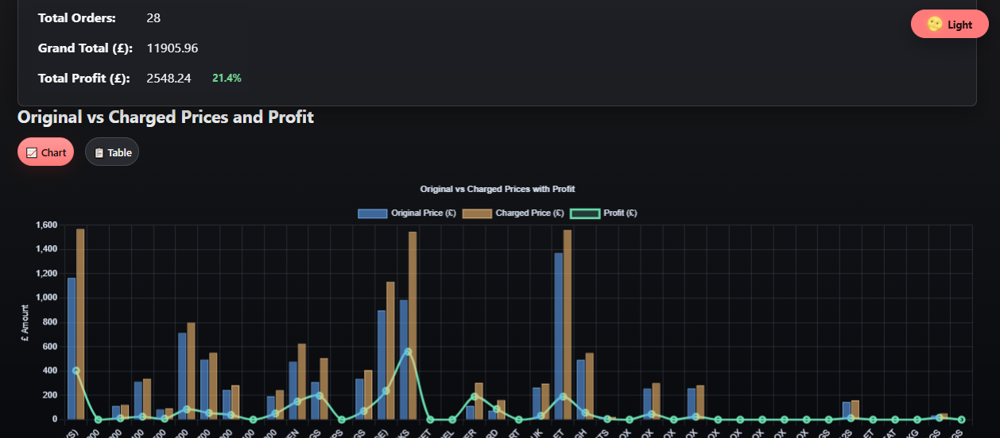
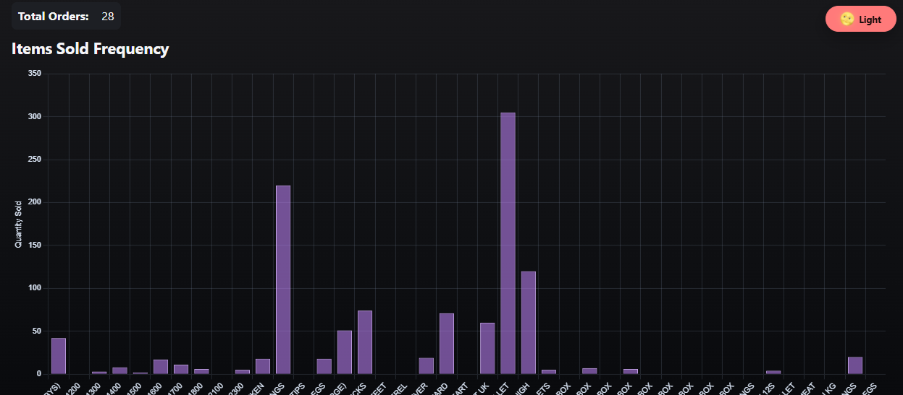
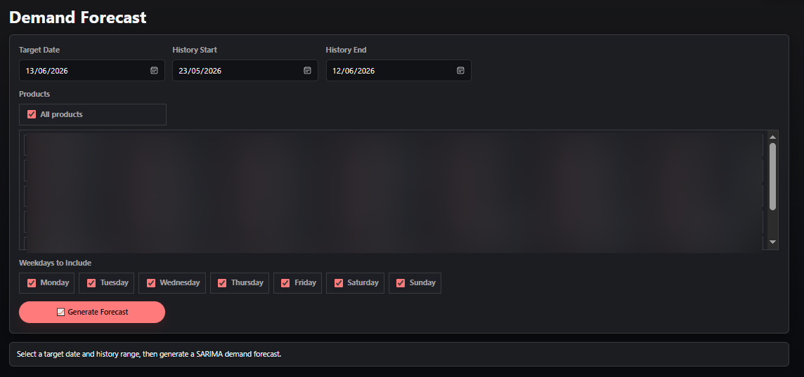

Data Preparation
ETL, validation, messy text fields, structured datasets, SQL views, and analysis-ready tables.
Data Analytics + GenAI
Aim: Generate Realistic Insights From Complex Data Using Agentic AI, Advanced LLM Reasoning, Based On Classical Rules Of Statistics And Probability.
Profile
Muhammad is an MSc Artificial Intelligence graduate and analytics practitioner focused on data cleaning, KPI design, dashboarding, forecasting, statistical analysis, machine learning, and AI-assisted workflows. His GenAI work is grounded in verified datasets, source context, and measurable outputs so insights remain traceable instead of generic. His work is positioned for Data Analyst, BI Analyst, Analytics Engineer, and AI Analytics roles where business decisions need reliable data foundations.
Tools & Platforms
 Python
Python
 SQL
SQL
 Power
BI
Power
BI
 Excel
Excel
 pandas
pandas
 NumPy
NumPy
 SciPy
SciPy
 sklearn
sklearn
 Databricks
Databricks
 Spark
Spark
 Apache
Apache
 Flask
Flask
 API
API
Concepts & Methods
 Forecasting
Forecasting
 RAG
RAG
 Embeddings
Embeddings
 Vector
Databases
Vector
Databases
 Prompt Engineering
Prompt Engineering
 Tool Use
Tool Use
 Structured
Outputs
Structured
Outputs
 LLMOps
LLMOps
 Agent
Orchestration
Agent
Orchestration
 Agentic AI
Agentic AI
 Machine Learning
Machine Learning
 LLMs
Reasoning
LLMs
Reasoning
ETL, validation, messy text fields, structured datasets, SQL views, and analysis-ready tables.
Dashboards for revenue, profit, customer experience, inventory, forecasting, and operations.
Time series, segmentation, risk metrics, model evaluation, experimentation, and ML workflows.
RAG, embeddings, vector search, AI product thinking, Copilot-assisted analysis, and agents grounded in real data.
Work examples



Excel Dashboard
Interactive sales analysis for revenue, transactions, product performance, store comparison, and staffing or inventory decisions.
Excel Analytics
Multi-table restaurant analysis using ratings, consumer preferences, cuisine demand, and investment scoring.
Power BI
Executive reporting for sales, profit, discounts, product performance, countries, and time-intelligence KPIs.
Power BI
Customer experience analytics across satisfaction, service drivers, delay patterns, and priority passenger segments.
Python Analytics
ETF analytics workflow covering returns, volatility, Sharpe ratio, drawdown, VaR, CVaR, factors, optimization, and momentum backtesting.
Python Analytics
End-to-end retail analytics with data cleaning, sales KPIs, RFM segmentation, clustering, and retention recommendations.
SQL Analysis
Relational SQL analysis for revenue, countries, customers, genres, artists, sales reps, unsold tracks, and dashboard-ready views.
SQL Analysis
Healthcare quality analysis using public CMS data to benchmark ratings, ownership types, readmission ratios, and state-level risk.
Tableau
Tableau dashboard for sales, profit, discounting, categories, regions, and executive commercial storytelling.
Tableau
Market opportunity dashboard for listing volume, pricing, reviews, neighborhood ranking, room mix, and investment-style decisions.
GenAI and ML
Practical AI capability covering embeddings, vector search, LangChain, ChromaDB, OCR, active learning, model evaluation, and AI product thinking.
Built employee-facing dashboards and a Django/PostgreSQL MVP for orders, invoicing, inventory, operational reporting, OCR digitisation, and forecasting dashboards.
Designed Python, pandas, SQL, Snowflake, forecasting, and ML workflows for structured and unstructured SME datasets.
Developed real-time computer vision workflows using Segment Anything Model, tracking, PyTorch, CUDA, and homographic transformations.
Built Python, SQL, and SAS reporting workflows, cleaned and validated datasets, and supported KPI analysis for operational decisions.
Contact